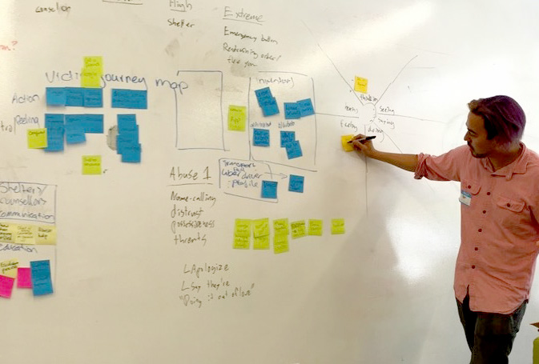
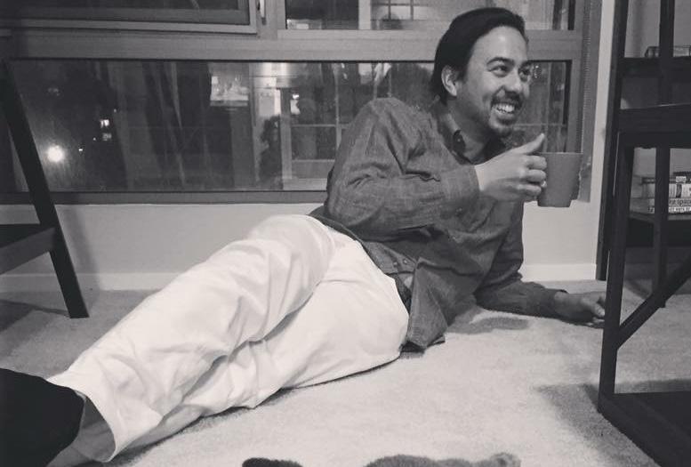

My interest in web design and development first started in middle school when I started learning HTML and Photoshop.

At UC Davis, I studied Landscape Architecture and Sustainable Development where I learned of the profound extent to the problem of Climate Change, as well as the latest solutions. At UCD, I studied both design and engineering which are traditionally siloed, yet represent two sides of the same coin. My engineering background strengthened my “left brain” debugging and problem-solving, while my design background strengthened “right brain” ideation and creative exploration.

In 2010, my passion for sustainability led me to the discovery of electric bicycle emerging tech and I started working for an innovative eBike start-up- PiMobility. After spending three and a half years promoting, building and selling electric bicycles, I gained the expertise necessary for my next position at City CarShare (CCS).
I joined CCS to lead an electric bike sharing program and maintain their electric carsharing fleet, one of the first of its kind in the country. CCS was understaffed so I ended up contributing on marketing material, visual design, web and app design, rebuilding important financial docs, photography, as well as maintaining the electric fleet. After over a year at CCS, an acquisition by a foreign company eliminated my position.

I now had many years of experience with website, mobile app, and visual design. I knew I wanted to be a UX designer and had a lot of the skills necessary, but lacked the full educational background. So I enrolled in General Assembly’s 10-week, full-time UX Design Immersive bootcamp. UX design thinking and Human-Centered Design gave me research methodologies and rapid prototyping skills so that my designs are always grounded in usability and user testing, deep research and empathetically solving the right problems.
At this point, I had experience with Visual Design, Website, App, and UX Design as well as Frontend Development. However, I had yet to officially hold the title of Web Developer. So I took a position for Cost Plus World Market to strengthen my Web Development skills and gain experience in a larger cross-functional corporate environment. I built out many custom pages for product promotions, new store openings, and many other custom pages. I was always ahead of schedule and built things very quickly. My background in design allowed me to work with the visual designers in their native language.
Working internally for a company allows a great depth of experience with one product, while freelancing offers an opportunity of breadth to solve many different problems. I decided to freelance so I could be more impactful in this capacity. I have now designed 21 logos, 15 desktop experiences, 7 mobile experiences, built out many websites, and worked with 10 happy clients. I’m now looking to connect, learn and grow in a team environment with a company that has a great product, team, and mission. Does that sound like you?
Let's chat.